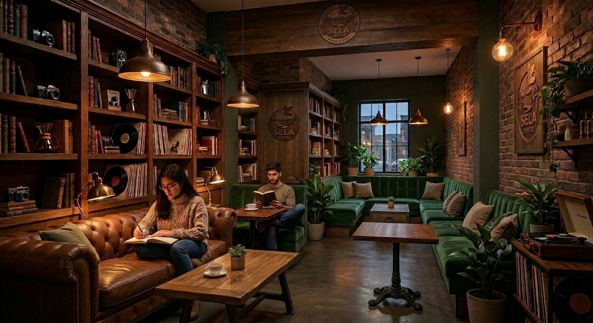
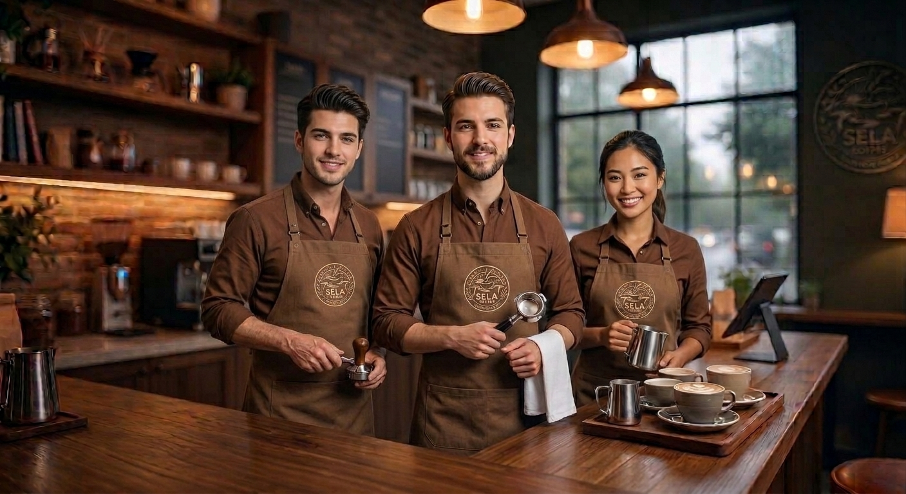

Cozzy Cafe Sela
Galeri Sela Coffee
Sekilas suasana kedai, proses seduh, dan orang-orang di balik setiap cangkir Sela Coffee.

Suasana Kedai
Sudut-sudut Sela Coffee yang nyaman untuk nongkrong, belajar, dan berdiskusi.


Proses Seduh
Setiap cangkir diseduh dengan perhatian pada detail.

Tim Kami
Orang-orang yang menyapa kamu setiap hari di Sela Coffee.

Video Profil Kedai
Kenali lebih dekat Sela Coffee lewat video profil kedai kami.
Nada Penanda Kedai
Nada singkat ini memastikan setiap elemen audio dan kontrol pemutar dapat dinikmati dengan baik.